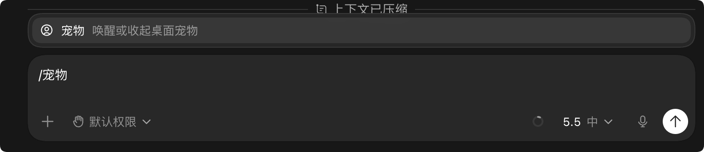

Codex Slash / Commands
Slash Commands in Codex/It is the shortcut command system (Slash Commands).
After typing the / symbol in the dialog box, the system immediately pops up a command panel listing all available commands and their descriptions.
To use MCP, Skills, browser, etc., just type / and then select the corresponding function.

To summon the pet, you can type/petEnglish version input/pet:

If the Chinese feels awkward, you can set the language to English:

Command Categories
By function, they can be divided into four major categories: context management, code and development workflow, model and reasoning control, personalization and others.
Context management
A group of commands for controlling conversation threads and context windows.
| Command | Features | Description | Applicable scenarios |
|---|---|---|---|
| /compact, /compress | Compress Context | Intelligently summarize the current conversation history, retain key information, and free up token space | When a long conversation shows a "context full" warning |
| /status, /status | View Status | Output key runtime parameters such as the current conversation ID, consumed context token count, and remaining quota | Before deciding whether to perform a token-intensive operation |
/compact will not lose critical context. It intelligently retains important code snippets and decision information, and only compresses redundant conversation turns.
Code and Development Workflow
Core function command group for developers.
| Command | Features | Description | Applicable scenarios |
|---|---|---|---|
| /review, /code review | Code Review | Have Claude perform a systematic review of the current file or specified code segment, checking for potential bugs, security issues, performance bottlenecks, and code style | Before submitting a PR, after code refactoring |
| /side, /side | Side Conversation | Initiate an independent conversation in a temporary branch without affecting the main thread; it can be merged, discarded, or kept when done | When you want to quickly try a solution without polluting the main conversation history |
| /fork, /fork | Fork Branch | Fork the conversation into a local Git branch or a fresh working tree, supporting parallel exploration of different approaches | When you need to compare Approach A with Approach B |
| /mcp | MCP Status | List all MCP (Model Context Protocol) servers connected in the current conversation, and view online status and available tool lists | Troubleshoot connection status when external tools don't respond |
The difference between /side and /fork: /side is a branch at the conversation level, suitable for quick experiments; /fork creates a Git branch, suitable for parallel development at the code level.
Model and reasoning control
A group of commands for adjusting AI capability and depth of thinking.
| Command | Features | Description | Applicable scenarios |
|---|---|---|---|
| /reasoning, /reasoning mode | Reasoning Strength | Switch between low/medium/high reasoning intensity levels, with the current level displayed in real time after the command | Increase for complex algorithm problems; keep medium-low for everyday Q&A |
| /model, /model | Model Switching | Switch between different AI models, with the current model name displayed after the command | Choose a lightweight model for quick boilerplate code generation, and a flagship model for deep architectural analysis |
High-intensity reasoning responds slower but gives more accurate answers, while low-intensity responds faster. When debugging complex bugs, it's recommended to switch to high reasoning mode.
Personalization and other
Experience customization and accessibility command group.
| Command | Features | Description | Applicable scenarios |
|---|---|---|---|
| /persona, /persona | Set Persona | Adjust Claude's response tone and style, such as presets like "concise and direct," "detailed teaching," or "senior engineer" | Unify output style during team collaboration |
| /feedback, /feedback | Submit Feedback | Quickly open a feedback channel to report bugs, suggest features, or share usage experience | Provide immediate feedback when output quality issues are encountered |
| /pet, /pet | Desktop Pet | Toggle the built-in desktop pet display in Claude Code, a small easter egg feature | Hide it when you need to focus, summon it when resting |
Recommended Workflow
Incorporating slash commands into your daily development workflow can get twice the result with half the effort.
# 步骤1：开始新任务前，检查上下文余量 /status # 步骤2：遇到复杂问题，提升推理强度 /reasoning # 切换至"高"档 # 步骤3：完成代码改动后，启动审查 /review # 步骤4：探索不确定的方案，开启侧边对话 /side # 步骤5：上下文快满时，压缩历史 /compact
| Steps | Timing | Recommended Commands | Purpose |
|---|---|---|---|
| 1 | Before starting a new task | /status | Check context remaining and quota to determine whether a new conversation is needed |
| 2 | When encountering complex problems | /reasoning | Increase reasoning intensity for deeper analysis |
| 3 | Before submitting a PR | /review | Catch potentially missed edge cases and potential bugs |
| 4 | Explore New Solutions | /side or /fork | Experiment in a safe environment without affecting main-line progress |
| 5 | When context is about to run out | /compact | Compress historical conversations while preserving key context |
Quick Reference
The following quick-reference table summarizes brief information for all 11 built-in commands.
| Command | Features | Quick Notes |
|---|---|---|
| /compact | Compress Context | When a long conversation runs low on tokens, intelligently summarize the history |
| /status | View Status | An overview of conversation ID, token usage, and remaining quota |
| /review | Code Review | AI automatically checks bugs, security, performance, and style |
| /side | Side Conversation | Explore safely in a temporary branch without polluting the main thread |
| /fork | Fork Branch | Create a Git branch or new working tree, evolve in parallel |
| /mcp | MCP Status | View external service connections and tool availability |
| /reasoning | Reasoning Strength | Adjustable among low / medium / high levels, with the current level shown after the command |
| /model | Switch model | Switch the underlying AI model, with the current model name displayed after the command |
| /persona | Set Persona | Adjust the AI's reply tone and style |
| /feedback | Submit Feedback | Report issues or suggestions to Anthropic |
| /pet | Desktop Pet | Wake up or dismiss the built-in desktop pet (easter egg feature) |